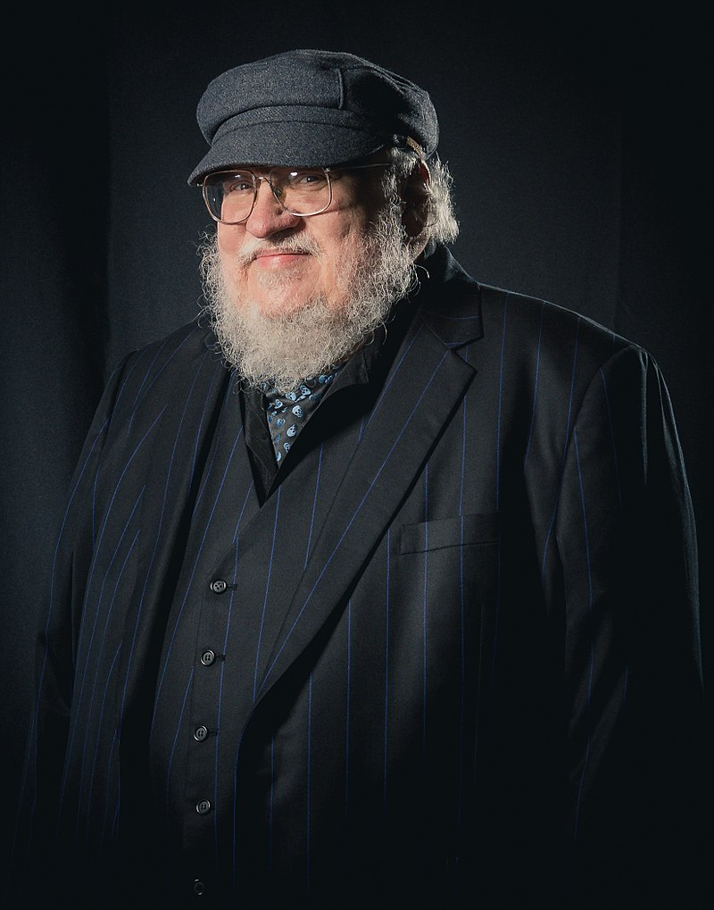

A Song of Ice and Fire is a series of epic fantasy novels by the American novelist and screenwriter George R. R. Martin.
He began the first volume of the series, A Game of Thrones, in 1991, and it was published in 1996.
Martin, who initially envisioned the series as a trilogy, has published five out of a planned seven volumes

Born in 1948, fantasy writer George R. R. Martin grew up in Bayonne, New Jersey. His first novel, Dying of the Light, debuted in 1977, and by the mid-1980s
he was also writing for television. In 1996 Martin published his first installment of the A Song of Ice and Fire fantasy series. He became a best-selling
author in 2005 with the fourth title of the series, A Feast for Crows, paving the way for a widely celebrated HBO adaptation that premiered as Game of Thrones in 2011.